생존함수(survival function)
생존시간 \(T_1, T_2, \ldots, T_n\)은 서로 독립이고 동일한 분포 \(F\)를 갖는 확률변수
중도절단시간 \(C_1, C_2, \ldots, C_n\)은 서로 독립이고 동일한 분포 \(G\)를 갖는 확률변수
생존시간 \(T_1, T_2, \ldots, T_n\)을 모두 관측하지 못하는 대신
\[
X_i = min(T_i, C_i)\] \[\delta_i =I(T_i < C_i )
\]
로 정의되는 \((T_1, \delta_i), (T_2, \delta_2), \ldots, (T_n , \delta_n )\)을 관측
- 임의중도절단의 경우 일반적으로 생존시간 \(T_i\)와 중도절단시간 \(C_i\)가 서로 독립 가정
생존함수\(S(t)\)
- 생존시간을 \(T(\ge 0)\)라 하고 \(T\)가 확률밀도함수 \(f(t)\)와 분포함수 \(F(t)\)를 가질 때,
\[S(t)=P(T>t)=1-P(T\le t)=1-F(t), \,\,\, 0<t<\infty\]
- 생존함수는 환자가 \(t\)시간 이상 생존할 확률
- 예) \(S(3)=0.42\): \(42\%\) of patients survived beyond 3 years
- survival curve: the graph of \(S(t)\) vs \(t\)
- steep curve: shorter survival
- gradual or flat curve: longer survival
- Median survival time: \(T_{0.5}\)
- \(T_{0.5}\) is a time point at which \(S(T_{0.5})=0.5\)
- Exactly half of population survives \(T_{0.5}\) units of time or longer
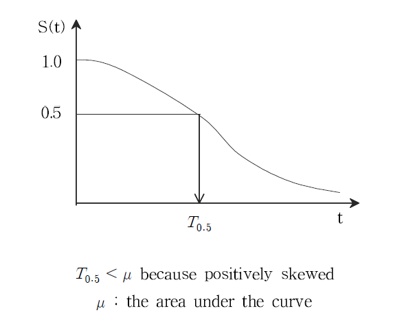
- Population mean \(\mu\): area under the survival curve
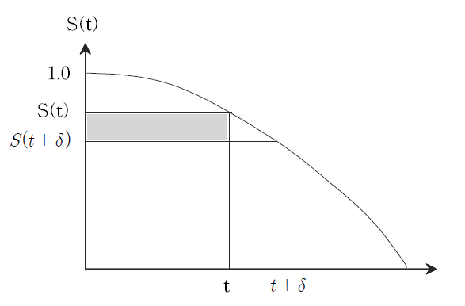
\[
\begin{aligned}
Height &=S(t)-S(t+\delta) \\
&= Pr(T>t) - Pr(T>t+\delta)\\
&= Pr(die\,\,\, within\,\,\, (t, t+\delta))
\end{aligned}
\]
Width=\(t\)
Area for the box
\[
t \times Pr(die\,\,\, within\,\,\, (t, t+\delta))
\]
\[
\begin{aligned}
Area &= \sum t \times Pr(die\,\,\, within\,\,\, (t, t+\delta)) \\
&= E(T) \\
&= \mu \,\,\, (as \,\,\, \delta \rightarrow 0)
\end{aligned}
\]
Other proof
\[
\begin{aligned}
\mu=E(T)&=\int_o^{\infty}tf(t)dt=[t\cdot (-)S(t)]_0^{\infty}-\int_0^{\infty}-S(t)dt\\
&= \int_0^{\infty}S(t)dt
\end{aligned}
\]
\(\therefore \,\,\, \hat{\mu}=\int_o^{\infty}\hat{S}(t)dt\)
- Problem
- If the last observation is censored then \(\hat{S}(t)=0 \rightarrow \hat{\mu}=\infty\)
\[
\hat{\mu}=\int_0^{t_(n)}\hat{S}(t)dt
\]
생존함수의 이론적 특성
- \(S(t)\) is monotone non-increasing
- 생존함수는 증가하지 않음. 즉 \(t\)가 증가함에 따라 감소함
- \(S(0)=1\), \(S(\infty)=\lim_{t\rightarrow \infty}S(t)=0\)
- \(t=0\)일 때 \(S(t)=S(0)=1\). 즉, 연구가 시작되었을 때 아직 사건이 발생하지 않았으므로 생존 함수값은 1.
- \(t=\infty\)일 때 \(S(t)=S(\infty)=0\). 즉, 이론적으로는 연구 기간의 제한이 없다면 결국 모든 대상자가 사망하므로 생존함수는 0.
- 현실적으로 여러가지 제약에 의해 모든 연구 대상자에게 사건이 발생하지 않을 수도 있기 때문에 반드시 연구 종료 시 추정된 생존함수가 0이 되지는 않음
- \(S(t)\) is left continuous
\[
\lim_{t\rightarrow t_0^-}S(t)=S(t_0) \leftrightarrow S(t_0^-)=S(t_0), \,\,\, S(t_0^+)\le S(t_0)
\]
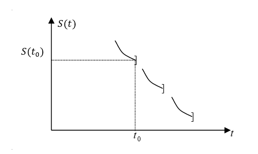
- \(1-survival \,\,\, function\) = cumulative distribute function (CDF)
Continuous survival time
Probability density function
- For continuous case: rate
\[\begin{aligned}
f(t)&=\lim_{\delta\rightarrow 0^+}\frac{P(t\le T \le t+\delta)}{\delta}\\
&=\lim_{\delta\rightarrow 0}\frac{S(t)-S(t+\delta)}{\delta}\\
&=-\frac{dS(t)}{dt}
\end{aligned}\]
\[
\therefore f(t)dt=-dS(t) \leftrightarrow S'(t)=-f(t)
\]
위험함수(hazard function)
- 위험함수는 어떤 환자가 \(t\) 시점까지는 생존했다가 \(t\) 시점 바로 직후에 사망하게 되는 순간위험률을 의미
- The instantaneous rate of failure at \(T=t\), conditional on survival to time \(t\)
- Instantaneous failure rate assuming that the individual has survived to time \(t\)
- Force of mortality 0 Instantaneous conditional probability that an event occurs between (\(t, t+\delta\)) given that the individual has survived up to time \(t\)
\[
\begin{aligned}
\lambda(t)&=\lim_{\delta\rightarrow 0^+}\frac{P(t\le T \le t+\delta|T\ge t)}{\delta}\\
&=\lim_{\delta\rightarrow 0^+}\frac{P(t\le T \le t+\delta)}{\delta\cdot P(T\ge t)}\\
&=\frac{f(t)}{S(t)} \\
&=-\frac{-\frac{d}{dt}S(t)}{S(t)}\\
&=-\frac{d}{dt}\log S(t)
\end{aligned}
\]
- 누적위험함수(cumulative hazard function)
\[
\Lambda(t)=\int_0^t \lambda(s)ds
\]
\[
\log S(t)=-\int_0^t \lambda(s)ds = -\Lambda(t)
\]
\[
\therefore S(t)=e^{-\Lambda(t)}
\]
- 위험함수의 이해를 위해
- \(P(A|B)\)는 조건부확률을 뜻하는 것으로 주어진 사건 \(B\)가 일어났다는 가정하에 \(A\)가 일어난 확률을 의미
- \(P(t<T<t+dt|T \ge t)\)는 어떤 대상이 특정한 시간 \(t\)보다 더 생존하였다고 가정할 때 그 대상이 특정한 시간으로부터 아주 짧은 시간 간격 안에 실패할 확률을 의미
- 이때, 위험함수는 조건부확률을 단위시간으로 나눈 것으로 확률에서 비율의 개념으로 바뀜
- 조건부확률은 0과 1사이의 값, 위험함수는 0부터 무한대의 값을 가짐
- 예를 들어, 조건부확률이 1/3일때 시간 간격이 1/2day라면 확률을 시간 간격으로 나눈 값은 0.67/day가 되고 시간 간격을 1/14week라면 확률을 시간 간격으로 나눈 값은 4.67/week이 됨
- 위험함수 특징
- 항상 음수가 아닌 값을 가짐
- 0부터 무한대의 값을 가짐
- 위험함수를 고려하는 이유
- 생존함수는 그 시간까지의 누적생존을 나타내지만, 위험함수는 순간적인 실패가능성을 의미
- 생존데이터에 맞는 특정 모형을 찾는 데 사용할 수 있음(지수분포, 와이블분포, 로그정규분포 등)
- 생존 데이터를 수학적으로 분석할 때 매개체로 이용
Some types of hazard function
- bathtub curve
- Hazard for human mortality
- The process of human mortality
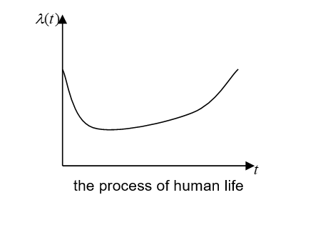
- positive aging
- e.g. acute leukemia who does not respond to treatment
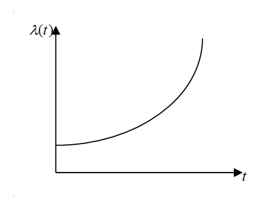
- Negative aging
- e.g. hazard function associated with organ transplant
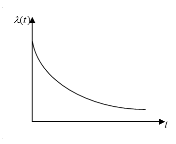
- Log normal
- Survival patterns with an initially increasing and then decreasing hazard
- e.g. tuberculosis, chronic leukemia, Hudgkin’s disease
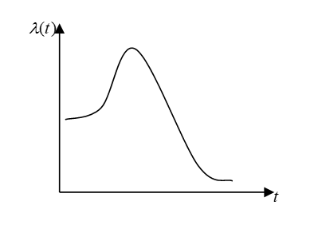
- Exponential
\[
\lambda(t) = c (constant): rate
\]
- Death per 1,000 treatment months
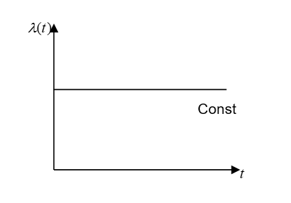
Example: Weibull model
\[
\lambda(t)=\lambda p(\lambda t)^{p-1}, \,\,\, t>0, \,\,\, \lambda>0, \,\,\, p>0(shape \,\,\, parameter)
\]
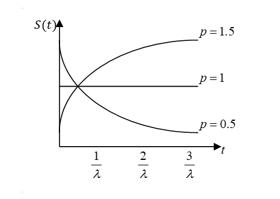
Some typical hazard function shapes
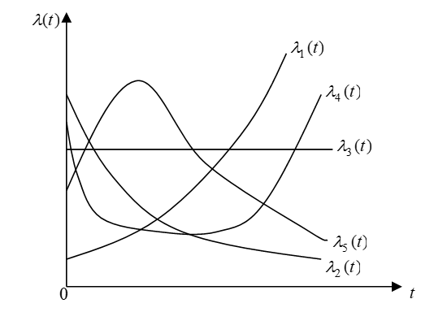
- \(\lambda_1(t)\) is an example of an Increasing Hazard(Failure) Rate(IFR) function
- Indicates that the patient is not responding to treatment
- \(\lambda_2(t)\) is an example of a Decreasing Hazard(Failure) Rate(DFR) function.
- Indicates that the patient is responding to treatment
- \(\lambda_3(t)\) is an example of a Constant Hazard(Failure) Rate (CFR) function.
- Indicates that the risk of failure is constant over time.
- For example, is often used as the model for the hazard rate for death by disease for healthy young individuals
- \(\lambda_4(t)\) is an example of a Bathtub Shaped Hazard(Failure) Rate function
- The hazard rate associated with the risk of death for a human subject is often modeled using
- \(\lambda_5(t)\) is a Mound Shaped Hazard Rate function
- The risk of failure increases first and then decreases
- Typical pattern of risk after a major surgery
Summary
- 누적분포함수(culmulative distribution function, CDF)
\[
F(t)=P(T \le t)=\int_0^{t}f(x)dx=1-S(t), \,\,\, 0<t<\infty
\]
- 확률밀도함수(probability density function, PDF)
\[
f(t)=\frac{d}{dt}F(t)=-\frac{d}{dt}S(t)
\]
\[
\lambda(t)=\frac{f(t)}{S(t)}
\]
- 누적위험함수(cumulative hazard function)
\[
\Lambda(t)=\int_{0}^{t}\lambda(u)du
\]
\[
\frac{d}{dt}log(S(t))=-\frac{f(t)}{S(t)}=-\lambda(t)
\]
따라서
\[
log(S(t))=-\Lambda(t) \leftarrow \rightarrow S(t)=exp(-\Lambda(t))=exp(-\int_0^t \lambda(u) du)
\]
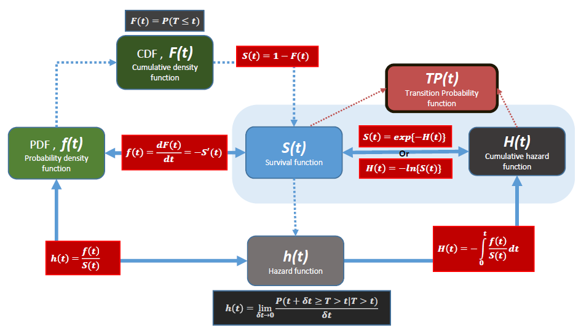
Discrete survival time
Assume survival time \(T\): discrete mass points, \(x_1<x_2< \cdots\)
Probability mass function \[
f(x_i)=Pr[T=x_i], \,\,\, i=1,2,\cdots
\]
Survival function
\[
S(t)=Pr(T\ge t)=\sum_{j,x_j\ge t}f(x_j)=\sum_{j}f(x_j)H(x_j-t)
\]
where \(H(x)\) is heaviside function
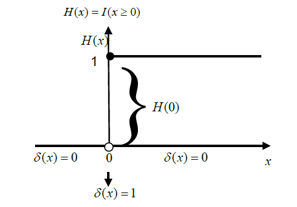
\[
\frac{dH(x)}{dx}=\lim_{\Delta x\rightarrow 0}\frac{H(x+\Delta x)-H(x)}{\Delta x}=\delta(x)
\]
where \(\delta(0)\) is the Dirac delta function defined as
\[
\delta(x)=\begin{cases}
1, \,\,\, if \,\,\, x=0 \\
0, \,\,\, if \,\,\, x\ne 0
\end{cases}
\]
\[
\int_{-\infty}^t dH(x)=\int_{-\infty}^t\delta(x)dx=H(t)-H(\infty)=H(t)
\]
\[
\therefore H(t)=\begin{cases}
1, \,\,\, if \,\,\, t<0 \\
0, \,\,\, if \,\,\, t\ge 0
\end{cases}
\]
- \(f(t)=-\frac{dS(t)}{dt}\)로 부터
\[
\begin{aligned}
f(t)dt &=-dS(t)\\
&=-\sum_{j}f(x_j)dH(x_j-t)\\
&=\sum_{j}f(x_j)\delta(x_j-t) \,\,\, (\therefore dH(x)=\delta(x)dx)
\end{aligned}
\]
Hazard function
\[
\lambda(t)=\lim_{\Delta t \rightarrow 0^+}\frac{P(t\le T<t+\Delta t|T\ge t)}{\Delta t}=\frac{f(x_j)}{F(t)}=\lambda_j, \,\,\, t=x_j
\]
\[
\therefore \lambda(t)=\sum_{j}\lambda_j\delta(t-x_j), \,\,\, \delta(x)=1,\,\,\, if \,\,\, x=0, \,\,\, otherwise \,\,\ 0
\]
- Hazard at \(x_j\) is defined as the conditional probability of failure at \(x_j\)
\[
\lambda_j = Pr(T=x_j|T\ge x_j)=\frac{f(x_j)}{F(x_j)}
, \,\,\, j=1, \cdots
\]
\[
\lambda(t) = \frac{f(t)}{F(t)}
\]
- Cumulative hazard function
\[
\Lambda (t)=\sum_{j, x_j\le t} \lambda_j = \sum_{j}\lambda_j H(t-x_j)=\int_0^t \lambda(s)ds
\]
\[
\therefore d\Lambda(t)=\sum_{j}\lambda(t)\delta(t-x_j)dt
\]
Product representation of \(S(t)\)
- Annals of Statistics, 1990
\[
S(t)=\prod_{j,x_j<t}(1-\lambda_j)
\]
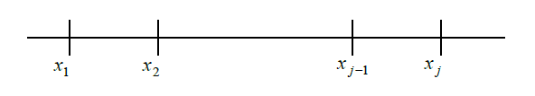
\[ \begin{aligned}
S(x_j) &= Pr(T\ge x_j)\\
&=Pr(T\ge x_j|T\ge x_{j-1})Pr(T\ge x_{j-1})\\
&=(1-\lambda_{j-1})\cdot S(x_{j-1}), \,\,\, (\cdot \lambda_{j-1}=Pr(T=x_{j-1}|T\ge x_{j-1}))\\
&=(1-\lambda_{j-1})\cdot (1-\lambda_{j-2})\cdot S(x_{j-2})\\
& \,\,\,\,\,\,\,\,\,\,\,\,\,\,\,\,\,\,\,\, \vdots \\
&= S(t)=\prod_{j,x_j<t}(1-\lambda_j)
\end{aligned}
\]
\(T\) has continuous and discrete parts (mixture of these)
- \(T_d\): discrete survival time \(\sim S_d\)
\[
x_1 < x_2 < \cdots < x_j: \,\,\, jump \,\,\, point
\]
\(T_c\): continuous survival time \(\sim S_c\)
Assume \(T_d\) and \(T_c\) are independent
\(T=min(T_c, T_d)\): death can be determined at first are between \(T_c\) and \(T_d\)
- \(S(t)=P(min(T_c,T_d)\ge t)=P(T_c \ge t) P(T_d\ge t)=S_c(t)S_d(t)\)
Survival function at time \(t\) is the product of two survival tuncions at time \(t\)
\(f(t)dt=-dS(t)=S_c(t)f_c(t)dt+S_c(t)f_d(t)dt\)
\(\lambda(t)dt=-\frac{dS(t)}{S(t)}=\lambda_c(t)dt+\lambda_d(t)dt\)
\(\Lambda(t)=\Lambda_c(t)+\Lambda_d(t)\)
Summary
\[
f(t)=\sum_j f(x_j )\delta(x_j -t)
\]
\[
\lambda(t)=\sum_j \lambda_j \delta(t-x_j)
\]
- 누적위험함수(cumulative hazard function)
\[
\Lambda(t)=\sum_j \lambda_j H(t-x_j)=\sum_{j, x_j\le t}\lambda_j
\]